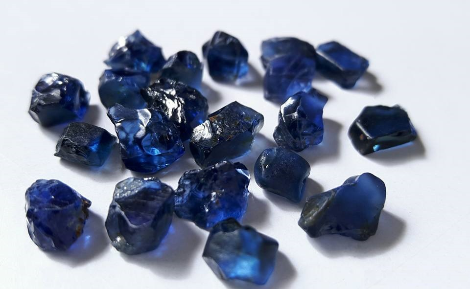

New here?

New to rockhounding and don't know where to start? Not to worry, we will show you the ropes. Click below to head over to our "Getting Started" guide
Getting StartedRocks & Minerals In Montana


Montana rockhounding maps to hunt for crystals, gemstones, minerals, and ores. Montana, known as the "Treasure State," has a rich and diverse mineral heritage that attracts rockhounds from around the world. With its wealth of sapphires, garnets, gold, and other precious gems, Montana provides endless opportunities for rockhounding enthusiasts to explore and discover.
Shop Our Merch!

We have tons of cool t-shirts, hats, water bottles, and stickers. Show off your love for rockhounding with our high-quality merchandise.
Visit StorePlease always bring appropriate attire and do research before venturing out to rock hunt and crystal hunt. Also, be sure to verify that the location you want to hunt at is available for public access. Rockhounding.org does our best to verify, but it is your responsibility to verify as well because sometimes things change. We are not liable for any actions you take from the information you find on this site.
Snacks & Hydration

Energy Bars
Stay energized with the best energy bars for your rockhounding adventures.
Our Favorites

Must Have Rockhounding Tools


Keeping accurate records of Rockhounding & Gemstone Hunting Locations is a community effort! Know of a good spot that is missing from our maps? Feel free to submit it below. Thank you for your contributions to the rockhounding community!
Popular Rocks, Crystals, & Gemstones In Montana
-

Montana Sapphire
Montana Sapphires, known for their unique colors, can be found in several areas, including Rock Creek and Missouri River.
Read More -
 Quartz
QuartzQuartz is abundant in Montana, with notable deposits in the Butte and Philipsburg districts.
Read More -
 Malachite
MalachiteMalachite can be found in copper mines throughout Montana, especially around the Butte area.
Read More -
 Barite
BariteBarite is found in several locations in Montana, including the Elk Creek and Highwood Mountains areas.
Read More -
 Rhodochrosite
RhodochrositeRhodochrosite, known for its vibrant pink-red color, can be found in the Butte and Philipsburg districts in Montana.
Read More -
 Dinosaur Fossils
Dinosaur FossilsMontana is famous for its dinosaur fossils, which can be found in locations such as the Judith River Formation and Hell Creek Formation.
Read More -
 Amethyst
AmethystAmethyst crystals can be found in several locations in Montana, including the Butte and Philipsburg districts.
Read More -
 Calcite
CalciteCalcite can be found in various locations throughout Montana, including the Philipsburg district and Belt area.
Read More -
 Gold
GoldGold can be found in numerous areas of Montana, such as the Alder Gulch, Confederate Gulch, and Libby Creek areas.
Read More -
 Garnet
GarnetGarnet is found in several locations in Montana, including the Ruby Range, Garnet Range, and Yogo Gulch.
Read More
Popular Rock Hunting Areas In Montana
-
 Gem Mountain
Gem MountainGem Mountain, located near Philipsburg, is famous for its sapphire deposits and offers an exciting rockhounding experience.
Read More -
Blanchard Mine
The Blanchard Mine, in the Little Belt Mountains, is known for producing beautiful rhodochrosite specimens.
Read More -
 Yogo Gulch
Yogo GulchYogo Gulch, near Utica, is a famous location for finding Yogo sapphires, a unique and valuable variety of sapphire.
Read More -
 Alder Gulch
Alder GulchAlder Gulch, near Virginia City, was the site of a major gold discovery and is still a popular area for gold panning.
Read More -
 Libby Creek
Libby CreekLibby Creek, near Libby, offers recreational gold panning opportunities and is a popular spot for prospectors.
Read More -
 Ruby Range
Ruby RangeThe Ruby Range, southwest of Dillon, is a great location for finding garnets and other interesting minerals.
Read More
Geology of Montana
Montana's diverse geology tells a fascinating story of the Earth's history, spanning more than a billion years. The state's oldest rocks, dating back to the Precambrian era, can be found in the western regions, where the remnants of ancient oceans and volcanic islands reveal a rich geological past.
Throughout its history, Montana has experienced multiple periods of mountain building, resulting in the formation of the Rocky Mountains and other ranges. The tectonic forces responsible for these events include the ancient continental collisions and the more recent Laramide Orogeny, which took place around 80 to 55 million years ago.
Montana's geological landscape also showcases evidence of ice age glaciation, with the Glacial Lake Missoula floods shaping the terrain and leaving behind a variety of unique geological features. These massive floods, occurring around 15,000 years ago, carved out the Channeled Scablands and formed the Columbia River Gorge, leaving behind vast deposits of glacial sediment.
Montana is also known for its rich fossil history, with discoveries such as the Hell Creek Formation showcasing an abundance of dinosaur remains, including the famous T. rex and Triceratops. Additionally, the state is home to the Burgess Shale-type deposits, which contain some of the most well-preserved Cambrian-era fossils in the world, offering valuable insights into the evolution of early life forms.
From its ancient beginnings to its ice age transformations, Montana's geological wealth continues to be a source of scientific discovery and fascination for rockhounds and geologists alike. The state's rich and varied geology presents an intriguing window into the Earth's past and offers a unique opportunity for those interested in uncovering its many secrets.